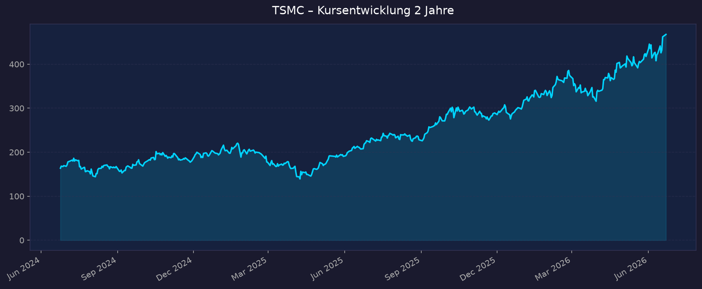
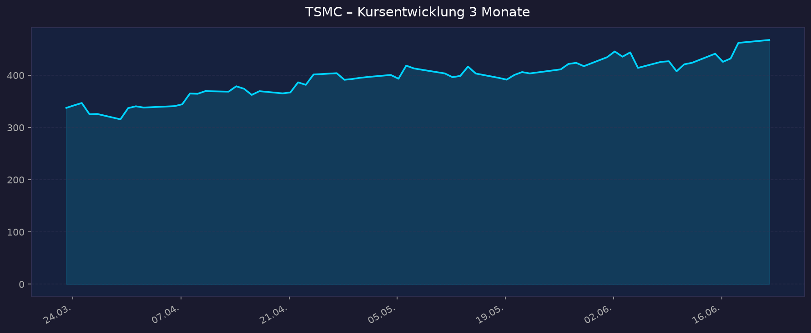

Alle Kurse in USD (NYSE-ADR, 1 ADR = 5 Stammaktien)
📈 1. Kursentwicklung
Aktueller Kurs: 467,67 USD | Veränderung heute: +1,2 % (Vortag 462,12 USD) Frisches Allzeit-/52W-Hoch am 22.06.2026 — die These vom stärksten intakten Trend bestätigt sich.
Chart – 2 Jahre

Chart – 3 Monate

| Zeitraum | Kurs Start | Kurs Ende | Veränderung |
|---|---|---|---|
| 2 Jahre | 163,60 | 467,67 | +185,9 % |
| 3 Monate | 337,66 | 467,67 | +38,5 % |
| 12 Monate (52W-Tief 23.06.25) | 206,20 | 467,67 | +126,8 % |
| 52-Wochen-Hoch (22.06.26) | — | 476,79 | — |
| 52-Wochen-Tief (23.06.25) | — | 206,20 | — |
Interaktiver Chart: https://www.tradingview.com/symbols/NYSE-TSM/
Einordnung: Kurs notiert rund 2 % unter dem Allzeithoch, intakter Aufwärtstrend ohne nennenswerte Korrektur in den letzten 3 Monaten (+38 %). ~12-Monats-Performance +120–127 %. Trendstärke unter den höchsten der Recherche.
💹 2. KGV-Entwicklung (Kurs-Gewinn-Verhältnis)
Aktuelles KGV (TTM): ~38,9 (finviz) / 34,8 (financecharts, Stand 19.06.) | Forward-KGV: ~23,5
| Zeitraum | KGV | Einordnung |
|---|---|---|
| Aktuell (TTM) | ~35–39 | oberes Ende der eigenen Historie |
| Forward (2026e) | ~23,5 | deutlich günstiger durch >30 % erwartetes Gewinnwachstum |
| Ende 2025 | 28,3 | — |
| 3-Jahres-Schnitt | 24,9 | — |
| 5-Jahres-Schnitt | 23,4 | — |
| 10-Jahres-Schnitt | 22,1 | — |
| Historisches Tief (Q4 2022) | 11,9 | Zyklus-Tief |
| Historisches Hoch (Q1 2021) | 32,8 | bisheriger Spitzenwert — jetzt übertroffen |
Bewertung: Das Trailing-KGV liegt über allen historischen Durchschnitten und über dem bisherigen 10-Jahres-Hoch — die Aktie ist absolut nicht mehr billig. Entscheidend ist aber das Forward-KGV von ~23,5: Bei einer Gewinnwachstumsprognose von >30 % (2026e) ergibt sich ein PEG deutlich unter 1. Die Prämie ist durch Quasi-Monopol und Wachstum begründet, lässt aber wenig Spielraum für Enttäuschungen.
💰 3. Sales Multiple (Kurs-Umsatz-Verhältnis / P/S)
Aktuelles P/S (TTM): ~12,9 (stockanalysis/macrotrends) — finviz weist abweichend 18,26 aus (Berechnungs-/Währungsdifferenz ADR vs. TWD-Umsatzbasis)
| Zeitraum | P/S Ratio | Einordnung |
|---|---|---|
| Aktuell (TTM) | ~12,9 | hoch, aber für Margen-Champion plausibel |
| Ende 2025 | 13,6 | — |
| 2024 / 2023 | nicht zweifelsfrei verfügbar (Macrotrends-Detailseite gesperrt, HTTP 402) | — |
Trend: Steigend gegenüber historischem Schnitt. Das hohe P/S ist durch eine außergewöhnliche Nettomarge von ~50 % relativiert — bei dieser Profitabilität ist ein zweistelliges P/S weniger alarmierend als bei margenschwachen Foundries. Detaillierter 2J-Verlauf für 2023/2024 nicht verfügbar.
📊 4. Handelsvolumen (Trading Volume)
| Zeitraum | Ø Tagesvolumen | Auffälligkeiten |
|---|---|---|
| 3-Monats-Durchschnitt | ~13,5 Mio. ADR | — |
| 10-Tage-Durchschnitt | ~14,2 Mio. ADR | leicht erhöht (Allzeithoch-Phase) |
| 2-Jahres-Durchschnitt | nicht verfügbar | — |
| Volumen-Peak (2J) | nicht verfügbar | typisch um Earnings-Termine (16.04.26 u. a.) |
Volumentrend: Volumen leicht über dem Schnitt — konsistent mit dem Ausbruch auf ein neues Allzeithoch. Marktkapitalisierung ~2,43 Bio. USD; sehr hohe Liquidität.
🏦 5. Insider Trades (letzte 2 Jahre)
| Datum | Name | Funktion | Kauf/Verkauf | Anzahl | Wert |
|---|---|---|---|---|---|
| — | — | — | — | — | — |
Hinweis: TSMC ist ein taiwanesisches Unternehmen; das US-ADR unterliegt nicht der SEC-Form-4-Insiderpflicht wie US-Domestic-Emittenten. Detaillierte Einzeltransaktionen mit Namen/Datum sind nicht verfügbar.
- finviz-Aggregat: Insider Ownership 0,09 %, Insider Transactions −3,88 % (Netto-Verkaufstendenz über den Beobachtungszeitraum), Institutional Ownership 15,16 % (institutionelle Transaktionen +11,90 %, also Netto-Zukäufe).
3-/24-Monats-Überblick: Auf ADR-Ebene leichte Netto-Verkaufstendenz bei Insidern, gegenläufig deutliche institutionelle Zuflüsse. Einzelne Form-4-Daten nicht verfügbar.
Quelle: finviz (Aggregat). SEC-Form-4-Einzeldaten für ausländischen Emittenten nicht anwendbar.
🩳 6. Short-Positionen
Aktuelle Short Quote: 0,55 % des Float (sehr niedrig) | Short Ratio 2,09 | Short Interest 28,28 Mio. ADR | Float 5,18 Mrd. ADR
| Zeitraum | Short Interest | Veränderung |
|---|---|---|
| Aktuell | 0,55 % | — |
| vor 3 / 6 / 12 Monaten | nicht verfügbar | — |
Einschätzung: Mit 0,55 % extrem niedrige Short-Quote — der Markt setzt praktisch nicht gegen die Aktie. Kein Short-Squeeze-Potenzial, aber auch kein Bären-Druck. Spiegelt das hohe Vertrauen in das Geschäftsmodell wider. Historischer Verlauf nicht verfügbar.
Quelle: finviz
🗞️ 7. Aktuelle Nachrichten
| Datum | Quelle | Nachricht | Relevanz |
|---|---|---|---|
| 22.06.26 | Susquehanna | Kursziel auf 575 USD (von 500) angehoben, Rating "Positive" | Hoch |
| 22.06.26 | Gurufocus/CoinCentral | TSM durchbricht 52-Wochen-Hoch (+3 %), neue Rekorde im KI-Chip-Markt | Hoch |
| 16.04.26 | TSMC IR / Bloomberg | Q1-Zahlen: Umsatz +35 % YoY, Capex-Ausblick 2026 auf 52–56 Mrd. USD angehoben | Hoch |
| 14.05.26 | Digitimes | CoWoS-/SoIC-Kapazitätsausbau; Advanced Packaging 2026 ausverkauft | Hoch |
| 27.04.26 | StockTitan/IR | Arizona-Investitionsrahmen erweitert (bis ~165 Mrd. USD aktiv, langfristig größer); 2. Fab Equipment Q3 2026 | Mittel |
| 29.12.25 | TrendForce | Sub-3nm-Preiserhöhung 3–10 % ab 2026, Hikes bis 2029 geplant | Hoch |
| 26.01.26 | CNBC | Nvidia überholt Apple als größter TSMC-Kunde (19 % Umsatz 2025) | Mittel |
| 2H 2026 | diverse | 2nm-Risikoproduktion startet 2H 2026, Hochlauf 2027; N2 bereits weitgehend ausverkauft | Hoch |
| 17.06.26 | 24/7 Wall St. | Kursprognose-Update 2026–2030, überwiegend bullisch | Mittel |
Sentiment: Überwiegend positiv — Analysten heben Kursziele an (bis 575 USD), strukturelle KI-Nachfrage, Preissetzungsmacht und ausverkaufte Kapazitäten dominieren. Gegengewicht bleibt das Geopolitik-Risiko.
📋 8. Letzte 3 Quartalsberichte
Q1 2026 (16.04.2026)
| Kennzahl | Ist | Erwartung | Abweichung |
|---|---|---|---|
| Umsatz | 35,90 Mrd. USD (NT$1.134,1 Mrd.) | ~35,5 Mrd. USD | leicht über Erwartung |
| EPS (verwässert, ADR) | 3,49 USD (NT$22,08) | — | +58 % YoY |
| Bruttomarge | 66,2 % | — | sehr stark |
| Nettomarge | 50,5 % | — | — |
| Free Cashflow | nicht verfügbar | — | — |
Guidance: Q2 2026 Umsatz 39,0–40,2 Mrd. USD, Bruttomarge 65,5–67,5 %; FY2026 Umsatzwachstum >30 % (USD), Capex am oberen Ende 52–56 Mrd. USD. Kursreaktion: positiv aufgenommen; Teil des fortgesetzten Aufwärtstrends Richtung Allzeithoch.
Q4 2025 (Mitte Januar 2026)
| Kennzahl | Ist | Erwartung | Abweichung |
|---|---|---|---|
| Umsatz | ~33,1 Mrd. USD (NT$1.046,1 Mrd.) | — | +20,5 % YoY / +5,7 % QoQ |
| EPS (verwässert, ADR) | 3,14 USD (NT$19,50) | — | +35 % YoY |
| Bruttomarge | 62,3 % | — | — |
| Nettomarge | 48,3 % | — | — |
| Free Cashflow | nicht verfügbar | — | — |
Guidance: Fortsetzung des KI-getriebenen Wachstums, Kapazitätsausbau Advanced Packaging. Kursreaktion: positiv, Bestätigung des Trends.
Q3 2025 (16.10.2025)
| Kennzahl | Ist | Erwartung | Abweichung |
|---|---|---|---|
| Umsatz | ~31,3 Mrd. USD (NT$989,9 Mrd.) | — | +30,3 % YoY / +6,0 % QoQ |
| EPS (verwässert, ADR) | 2,92 USD (NT$17,44) | — | +39 % YoY |
| Bruttomarge | 59,5 % | — | — |
| Nettomarge | 45,7 % | — | — |
| Free Cashflow | nicht verfügbar | — | — |
Guidance: Anhebung der Jahresprognose im Jahresverlauf; KI-/HPC-Nachfrage als Treiber. Kursreaktion: positiv.
Trend über 3 Quartale: Umsatz NT$989,9 → 1.046,1 → 1.134,1 Mrd. (kontinuierlich steigend), Bruttomarge 59,5 → 62,3 → 66,2 % (klare Margenexpansion), Nettomarge 45,7 → 48,3 → 50,5 %. Außergewöhnlich konsistente Beschleunigung.
🌍 9. Marktkontext & Wettbewerb
(via market-research Skill)
Markt / Branche: Halbleiter-Foundry (Auftragsfertigung). Marktgröße 2026 je nach Quelle ~166–202 Mrd. USD; CAGR-Konsens grob 6–12 %. Treiber: KI/HPC, sub-3nm-Nodes, Advanced Packaging.
Marktanteile Q1 2026 (TrendForce, 12.06.26):
| Foundry | Umsatz Q1 2026 | Marktanteil | Stärke | Schwäche |
|---|---|---|---|---|
| TSMC | 35,86 Mrd. USD | 72,3 % | höchste Transistordichte (N2), beste Yields, Kunden-Ökosystem, Kapazität ausverkauft | Preissetzung erzeugt Kundendruck, Klumpenrisiko Taiwan |
| Samsung Foundry | 3,2 Mrd. USD | 6,5 % | technisch konkurrenzfähig (SF2) | Yield-/Vertrauensdefizit, verliert Anteile |
| SMIC | n. v. | 5,1 % | China-Heimatmarkt | von Leading-Edge abgeschnitten (Exportkontrollen) |
| UMC | 1,93 Mrd. USD | 3,9 % | Mature Nodes | kein Leading-Edge |
| GlobalFoundries | n. v. | 3,3 % | Specialty | kein Leading-Edge |
| Intel Foundry | nicht in Top 10 | ~0,5 % | 18A/PowerVia-Effizienz | Yield-Rückstand bis 2027, dünnes Ökosystem |
Kernbefund: TSMC ist ~11× größer als Samsung Foundry und faktischer Monopolist bei Leading-Edge-Logik (3nm/2nm).
Branchentrends 2026:
- KI-Capex-Zyklus: HPC = 61 % des TSMC-Umsatzes (Q1 2026, +20 % QoQ); "Multiyear AI Megatrend".
- Advanced Packaging (CoWoS): Flaschenhals der KI-Hardware; Kapazität 2026 ausverkauft, Nvidia hält angeblich >60 %. Ausbau ~35k → ~115–130k WPM bis Ende 2026.
- Preissetzungsmacht: Sub-5nm +3–10 % ab 2026, mehrjährige Hikes bis ~2029.
Marktposition: Klar führend / Quasi-Monopol bei Leading-Edge. Intel und Samsung technologisch nicht auf Augenhöhe (Yield/Ökosystem).
Risiken aus dem Marktumfeld:
- Taiwan-Geopolitik (höchstes Risiko): Bleeding-Edge bleibt per Gesetz auf Taiwan — "gefährlichster Hotspot der Welt". China-Konflikt wäre existenziell.
- Kundenkonzentration: Nvidia 19 %, Apple ~17 % (Top-2 ~36 %) — steigende Abhängigkeit vom KI-Zyklus.
- Zyklik/Überkapazität: Mehrjähriger Capex-Aufbau (18 neue Fabs) birgt Überkapazitätsrisiko, falls KI-Capex abkühlt.
- US-Arizona/Exportkontrollen: >165 Mrd. USD Arizona-Investment hedged Taiwan-Risiko, schafft aber US-Politik-/Tarif-Exposure; Margendruck durch Auslands-Fab-Hochlauf.
📝 Gesamteinschätzung
Stärken:
- Faktisches Monopol auf führende Logik-Fertigung (72 % Foundry-Anteil, ~11× Samsung)
- Außergewöhnliche und steigende Profitabilität (Bruttomarge 66 %, Nettomarge ~50 %)
- Strukturelle KI-Nachfrage + Preissetzungsmacht (Hikes bis 2029), Kapazität ausverkauft
- Beschleunigtes Wachstum: 3 Quartale in Folge steigender Umsatz und Marge, FY-Prognose >30 %
- Forward-KGV ~23,5 bei >30 % Wachstum → moderates PEG trotz Allzeithoch
Risiken:
- Taiwan-Geopolitik als systemisches, nicht hedgebares Klumpenrisiko (existenziell)
- Steigende Abhängigkeit vom KI-Capex-Zyklus (Nvidia 19 %, Top-2 ~36 %)
- Trailing-KGV über 10-Jahres-Hoch — wenig Puffer für Enttäuschungen
- Margendruck durch teuren US-/Japan-Fab-Hochlauf
- Mittelfristiges Überkapazitätsrisiko bei Abkühlung der KI-Investitionen
Fazit: TSMC ist auf dem aktuellen Niveau (Allzeithoch, 467,67 USD) operativ einer der stärksten Werte des Halbleitersektors: Quasi-Monopol, Margenexpansion, struktureller KI-Rückenwind und trotz Rekordkurs ein vertretbares Forward-KGV. Die Bewertung ist absolut hoch, relativ zum Wachstum aber begründet. Das dominierende Risiko ist nicht operativ, sondern geopolitisch — die Taiwan-Frage entscheidet über das Tail-Risk. Für trendorientierte Anleger intakter Aufwärtstrend mit fundamentaler Substanz; das Geopolitik-Tail-Risk verlangt Positionsgrößen-Disziplin.
🎯 Ranking-Einordnung
Bewertung nach 5 Kriterien (Punkte 1–10)
| Kriterium | Gewicht | Punkte | Begründung |
|---|---|---|---|
| Umsatz-/EPS-Wachstum | 25 % | 9 | >30 % FY-Umsatz, EPS +58 % YoY (Q1), 3 Quartale Beschleunigung, Margenexpansion |
| Bewertungsraum | 25 % | 6 | Trailing-KGV über 10J-Hoch (teuer), aber Forward-KGV ~23,5 / PEG <1 fängt es ab |
| Megatrend-Stärke | 20 % | 10 | KI/HPC-Engpass-Profiteur, Quasi-Monopol Leading-Edge, CoWoS-Flaschenhals |
| Katalysatoren | 15 % | 8 | 2nm-Hochlauf 2H26, Preis-Hikes bis 2029, Arizona, Analysten-Upgrades (575 USD) |
| Risikoprofil | 15 % | 4 | Taiwan-Geopolitik (existenziell), Kundenkonzentration, niedrige Short-Quote (kein Squeeze, aber Bewertungsrisiko) |
Gewichteter Gesamt-Score: 9×0,25 + 6×0,25 + 10×0,20 + 8×0,15 + 4×0,15 = 2,25 + 1,50 + 2,00 + 1,20 + 0,60 = 7,55 / 10
5-Jahres-Szenarien (Kursziel 2031)
Basis: aktueller Kurs 467,67 USD. Annahmen: anhaltendes KI-getriebenes Wachstum, Margenniveau, Multiple-Normalisierung Richtung historischer Schnitt im Base-Case.
| Szenario | Annahme | Kursziel 2031 | Potenzial |
|---|---|---|---|
| Bär | KI-Capex kühlt ab / Überkapazität / Taiwan-Eskalation drückt Multiple | ~300 USD | −36 % |
| Base | Umsatz-CAGR ~15–18 %, Marge stabil, Forward-KGV normalisiert auf ~20 | ~780 USD | +67 % |
| Bull | KI-Supercycle hält, Preissetzungsmacht, 2nm/A16-Premium, kein Geopolitik-Schock | ~1.150 USD | +146 % |
5-Jahres-Potenzial-Spanne: −36 % bis +146 % (Bär bis Bull).
⬇️ Weitere Analysen / Shortlist: 00_Momentum-Aktien USA-EU-Asien – 5-Jahres-Shortlist 2026-06-23
Datenquellen: Yahoo Finance · finviz · Macrotrends · financecharts · stockanalysis · TrendForce · TSMC Investor Relations (SEC 6-K) · Reuters/Bloomberg · CNBC · Susquehanna · Digitimes · market-research Skill Hinweis ADR-Bewertung: P/E und P/S variieren je Quelle durch TWD/USD-Umsatzbasis und Berechnungsmethode. Keine Anlageberatung — rein informative Auswertung öffentlich verfügbarer Daten. Stand 23.06.2026.